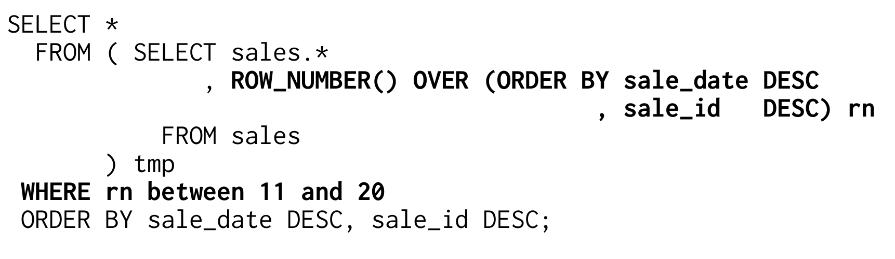
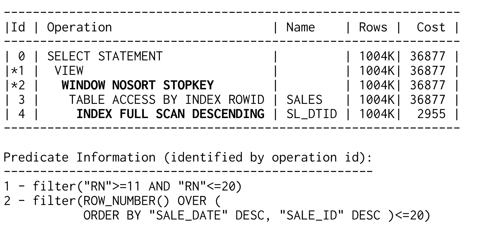
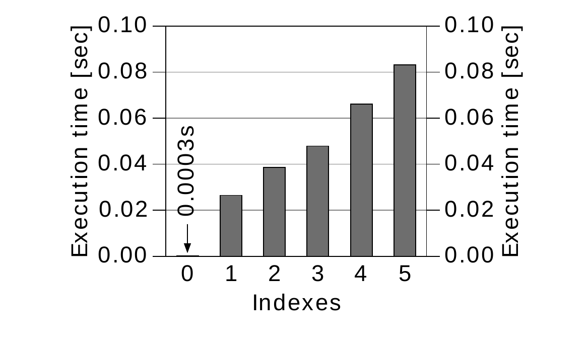
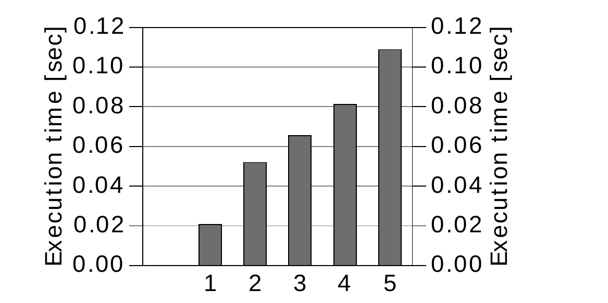
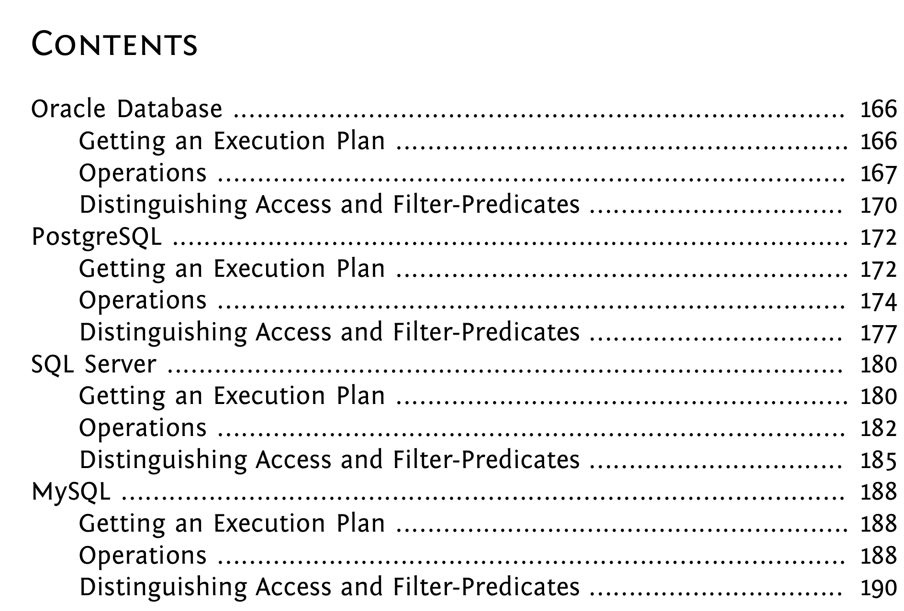
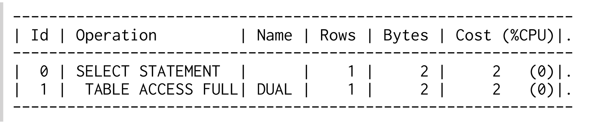
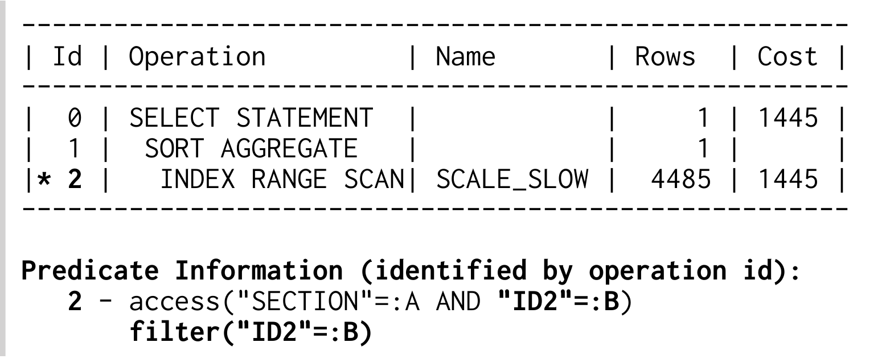
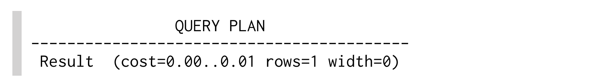
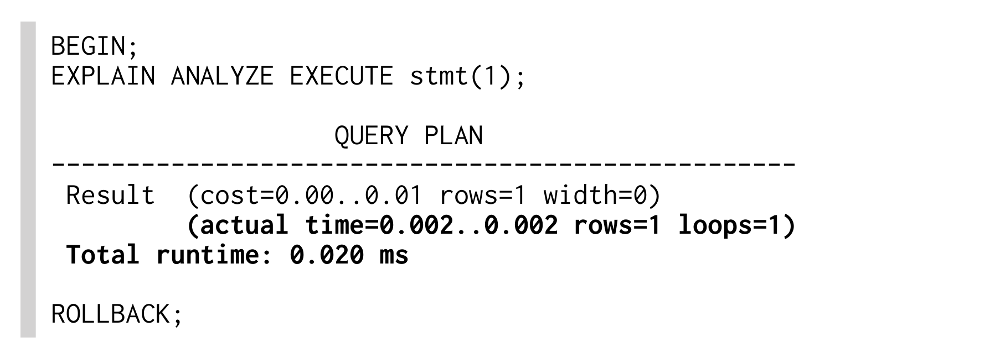

Window function cung cấp thêm một cách để implement pagination trong SQL.
Đây là một method linh hoạt và trên hết là tuân thủ SQL standard. Tuy nhiên, chỉ SQL Server và Oracle database mới có thể dùng chúng cho pipelined top-N query. PostgreSQL không abort index scan sau khi fetch đủ row nên execute các query này rất kém hiệu quả. MySQL hoàn toàn không hỗ trợ window function.
Ví dụ sau dùng window function ROW_NUMBER cho một pagination query:

Function ROW_NUMBER đánh số các row theo sort order được định nghĩa trong over clause. Outer where clause dùng cách đánh số này để giới hạn result ở page thứ hai (row 11 đến 20).
Oracle database nhận diện abort condition và dùng index trên SALE_DATE và SALE_ID để tạo behavior pipelined top-N:

Operation WINDOW NOSORT STOPKEY cho biết không có sort operation (NOSORT) và database abort execution khi đạt upper threshold (STOPKEY). Vì các operation bị abort được execute theo pipelined manner, query này có hiệu quả tương đương offset method đã giải thích ở section trước.
Tuy nhiên, strength của window function không nằm ở pagination mà ở analytical calculation. Nếu chưa từng dùng window function, bạn chắc chắn nên dành vài giờ để đọc documentation tương ứng.
Cho đến nay chúng ta mới chỉ bàn về query performance, nhưng SQL không chỉ có query. SQL cũng hỗ trợ data manipulation. Các command tương ứng — insert, delete và update — tạo thành phần gọi là “data manipulation language” (DML), một phần của SQL standard. Performance của các command này phần lớn bị index ảnh hưởng theo hướng tiêu cực.
Index là redundancy thuần túy. Nó chỉ chứa data cũng được lưu trong table. Trong write operation, database phải giữ các redundancy này nhất quán. Cụ thể, insert, delete và update không chỉ tác động đến table mà còn tác động đến các index giữ bản sao của data bị ảnh hưởng.
Số lượng index trên một table là factor chi phối mạnh nhất đối với insert performance. Table càng có nhiều index thì execution càng chậm. Insert statement là operation duy nhất không thể trực tiếp hưởng lợi từ indexing vì nó không có where clause.
Thêm một row mới vào table gồm nhiều bước. Trước tiên database phải tìm nơi lưu row. Với một regular heap table — không có row order cụ thể — database có thể chọn bất kỳ table block nào còn đủ free space. Đây là process rất đơn giản và nhanh, phần lớn được execute trong main memory. Sau đó database chỉ cần thêm entry mới vào data block tương ứng.
Nếu table có index, database phải bảo đảm entry mới cũng được tìm thấy thông qua các index đó. Vì vậy nó phải thêm entry mới vào từng index của table. Do đó, số lượng index là một multiplier của cost của insert statement.
Hơn nữa, thêm một entry vào index đắt hơn nhiều so với chèn entry vào heap structure vì database phải duy trì index order và tree balance. Điều đó nghĩa là entry mới không thể ghi vào bất kỳ block nào — nó thuộc về một leaf node cụ thể. Dù database dùng chính index tree để tìm leaf node đúng, nó vẫn phải đọc một vài index block để traverse tree.
Sau khi xác định đúng leaf node, database kiểm tra node còn đủ free space hay không. Nếu không, database split leaf node và phân phối các entry giữa node cũ và node mới. Process này cũng tác động đến reference trong branch node tương ứng vì reference đó cũng phải được duplicate. Branch node cũng có thể hết space nên có thể phải split tiếp. Trong trường hợp xấu nhất, database phải split tất cả node cho đến root node. Đây là trường hợp duy nhất khiến tree có thêm một layer và tăng depth.
Sau cùng, index maintenance là phần tốn kém nhất của insert operation. Điều này cũng thấy rõ trong Figure 8.1, “Insert Performance by Number of Indexes”: execution time gần như không đáng kể nếu table không có index. Tuy vậy, chỉ cần thêm một index là đủ làm execute time tăng gấp một trăm lần. Mỗi index thêm vào lại làm execution chậm hơn.
Figure 8.1. Insert Performance by Number of Indexes

Để optimize insert performance, việc giữ số lượng index ở mức nhỏ là rất quan trọng.
Nếu chỉ xét insert statement, tốt nhất là tránh index hoàn toàn — cách này cho insert performance tốt hơn rất nhiều. Tuy nhiên, table không có index khá thiếu thực tế trong các application thực tế. Thông thường bạn muốn retrieve data đã lưu nên cần index để cải thiện query speed. Ngay cả write-only log table cũng thường có primary key và index tương ứng.
Dù vậy, performance khi không có index tốt đến mức việc tạm thời drop toàn bộ index trong lúc load một lượng data lớn có thể hợp lý — với điều kiện các index đó không cần cho bất kỳ SQL statement nào khác trong thời gian này. Cách này có thể tạo ra speed-up rất lớn, thể hiện trên chart và thực tế là một practice phổ biến trong data warehouse.
Không giống insert statement, delete statement có where clause và có thể dùng mọi method được mô tả trong Chapter 2, “The Where Clause”, để hưởng lợi trực tiếp từ index. Thực tế, delete statement hoạt động giống một select rồi thêm một bước để delete các row đã xác định.
Việc xóa thực tế một row tương tự process insert một row mới — đặc biệt là việc loại bỏ các reference khỏi index và các hoạt động để giữ index tree cân bằng. Vì vậy performance chart trong Figure 8.2 rất giống chart đã trình bày cho insert.
Figure 8.2. Delete Performance by Number of Indexes

Về lý thuyết, chúng ta kỳ vọng delete performance tốt nhất với table không có index — giống như insert. Tuy nhiên, nếu không có index, database phải đọc toàn bộ table để tìm các row cần delete. Nghĩa là việc delete row nhanh nhưng việc tìm row rất chậm. Vì vậy trường hợp này không được thể hiện trong Figure 8.2.
Dù vậy, execute delete statement không có index vẫn có thể hợp lý, cũng giống như execute select statement không có index khi nó trả về phần lớn table.
Delete statement không có where clause là một ví dụ rõ ràng trong đó database không thể dùng index, dù đây là trường hợp đặc biệt có SQL command riêng: truncate table. Command này có effect giống delete không có where, ngoại trừ việc nó delete toàn bộ row trong một lần. Nó rất nhanh nhưng có hai side effect quan trọng: (1) nó thực hiện implicit commit (ngoại lệ: PostgreSQL); (2) nó không execute trigger nào.
Update statement phải relocate các index entry đã thay đổi để duy trì index order. Vì vậy database phải remove entry cũ và add entry mới ở vị trí mới. Response time về cơ bản giống tổng response time của delete và insert statement tương ứng.
Update performance, cũng như insert và delete, phụ thuộc vào số lượng index trên table. Điểm khác biệt duy nhất là update statement không nhất thiết tác động đến tất cả column vì chúng thường chỉ modify một vài column được chọn. Do đó update statement không nhất thiết tác động đến tất cả index trên table mà chỉ tác động đến những index chứa các column được update.
Figure 8.3. Update Performance by Indexes and Column Count
Figure 8.3 cho thấy response time của hai update statement: một statement set tất cả column và tác động đến tất cả index, sau đó là một statement thứ hai chỉ update một column nên chỉ tác động đến một index.
Update trên tất cả column cho thấy cùng pattern đã quan sát ở các section trước: response time tăng theo mỗi index bổ sung. Response time của update statement chỉ tác động đến một index không tăng nhiều vì nó giữ nguyên phần lớn index.
Để optimize update performance, bạn phải cẩn thận chỉ update những column đã thay đổi. Điều này hiển nhiên nếu bạn tự viết update statement. Tuy nhiên, ORM tool có thể generate update statement set tất cả column mỗi lần. Chẳng hạn, Hibernate làm vậy khi disable dynamic-update mode. Từ version 4.0, mode này được enable mặc định.
Khi dùng ORM tool, một practice tốt là thỉnh thoảng enable query logging trong development environment để kiểm tra các SQL statement được generate. Tip có tiêu đề “Enabling SQL Logging” ở page 95 có phần overview ngắn về cách enable SQL logging trong một số ORM tool được dùng phổ biến.
Trước khi database có thể execute một SQL statement, optimizer phải tạo execution plan cho statement đó. Sau đó database execute plan này theo từng bước. Ở khía cạnh này, optimizer rất giống compiler vì nó translate source code (SQL statement) thành một executable program (execution plan).
Execution plan là nơi đầu tiên cần xem khi tìm nguyên nhân của statement chậm. Các section sau giải thích cách lấy và đọc execution plan để optimize performance trong nhiều database khác nhau.

Hầu hết development environment (IDE) đều có thể hiển thị execution plan rất dễ dàng nhưng dùng những cách format rất khác nhau trên màn hình. Method được mô tả trong section này trả về execution plan như trong toàn bộ cuốn sách và chỉ yêu cầu Oracle database release 9iR2 hoặc mới hơn.
Xem execution plan trong Oracle database gồm hai bước:
1. explain plan for — lưu execution plan vào PLAN_TABLE.
2. Format và hiển thị execution plan.
Để tạo execution plan, bạn chỉ cần thêm explain plan for vào trước SQL statement tương ứng:
Bạn có thể execute explain plan for command trong bất kỳ development environment hoặc SQL*Plus nào. Tuy nhiên, command này không hiển thị plan mà lưu plan vào table tên PLAN_TABLE. Từ release 10g, table này tự động có sẵn dưới dạng global temporary table. Với các release trước, bạn phải tạo table trong từng schema khi cần. Hãy yêu cầu database administrator tạo giúp hoặc cung cấp create table statement từ Oracle database installation:
Bạn có thể execute statement này trong bất kỳ schema nào để tạo PLAN_TABLE trong schema đó.
Package DBMS_XPLAN được giới thiệu từ release 9iR2 và có thể format, hiển thị execution plan từ PLAN_TABLE. Ví dụ sau cho biết cách hiển thị execution plan gần nhất đã được explain trong database session hiện tại:
Một lần nữa, nếu statement đó không hoạt động ngay, bạn nên nhờ DBA hỗ trợ.
Query sẽ hiển thị execution plan như trong cuốn sách:

Một số column trong execution plan này đã được bỏ đi để vừa trang hơn trong sách.
INDEX UNIQUE SCAN chỉ thực hiện B-tree traversal. Database dùng operation này khi một unique constraint bảo đảm search criteria match không quá một entry. Xem thêm Chapter 1, “Anatomy of an Index”.
INDEX RANGE SCAN thực hiện B-tree traversal và đi theo leaf node chain để tìm tất cả matching entry. Xem thêm Chapter 1, “Anatomy of an Index”.
Các index filter predicate thường gây ra performance problem cho INDEX RANGE SCAN. Section tiếp theo giải thích cách nhận diện chúng.
Đọc toàn bộ index — tất cả row — theo index order. Tùy system statistics, database có thể thực hiện operation này nếu cần tất cả row theo index order — chẳng hạn vì có order by clause tương ứng. Thay vào đó, optimizer cũng có thể dùng INDEX FAST FULL SCAN và thực hiện thêm một sort operation. Xem Chapter 6, “Sorting and Grouping”.
Đọc toàn bộ index — tất cả row — theo cách chúng được lưu trên disk. Operation này thường được thực hiện thay cho full table scan nếu mọi column cần thiết đều có trong index. Tương tự TABLE ACCESS FULL, INDEX FAST FULL SCAN có thể hưởng lợi từ multi-block read operation. Xem Chapter 5, “Clustering Data”.
Retrieve một row từ table bằng ROWID lấy được từ index lookup ngay trước đó. Xem thêm Chapter 1, “Anatomy of an Index”.
Còn được gọi là full table scan. Đọc toàn bộ table — tất cả row và column — theo cách chúng được lưu trên disk. Dù multi-block read operation cải thiện đáng kể tốc độ full table scan, đây vẫn là một trong những operation tốn kém nhất. Ngoài IO rate cao, full table scan phải kiểm tra mọi table row nên cũng có thể tiêu tốn nhiều CPU time. Xem thêm “Full Table Scan” ở page 13.
Nhìn chung, join operation chỉ xử lý hai table mỗi lần. Nếu query có nhiều join hơn, chúng được execute tuần tự: trước tiên là hai table, sau đó là intermediate result với table tiếp theo. Trong ngữ cảnh join, từ “table” vì vậy cũng có thể có nghĩa là “intermediate result”.
Join hai table bằng cách lấy result từ một table và query table còn lại cho từng row của table thứ nhất. Xem thêm “Nested Loops” ở page 92.
Hash join load candidate record từ một phía của join vào hash table, sau đó probe hash table cho từng row từ phía còn lại của join. Xem thêm “Hash Join” ở page 101.
Merge join kết hợp hai sorted list như một zipper. Cả hai phía của join phải được presort. Xem thêm “Sort Merge” ở page 109.
Sort result theo order by clause. Operation này cần lượng memory lớn để materialize intermediate result (không pipelined). Xem thêm “Indexing Order By” ở page 130.
Sort một subset của result theo order by clause. Dùng cho top-N query nếu pipelined execution không thể thực hiện. Xem thêm “Querying Top-N Rows” ở page 143.
Sort result set theo các group by column và aggregate result đã sort ở bước thứ hai. Operation này cần lượng memory lớn để materialize intermediate result set (không pipelined). Xem thêm “Indexing Group By” ở page 139.
Aggregate một presorted set theo group by clause. Operation này không buffer intermediate result: nó được execute theo pipelined manner. Xem thêm “Indexing Group By” ở page 139.
Group result bằng hash table. Operation này cần lượng memory lớn để materialize intermediate result set (không pipelined). Output không được order theo cách có ý nghĩa nào. Xem thêm “Indexing Group By” ở page 139.
Hiệu quả của top-N query phụ thuộc vào execution mode của các operation bên dưới. Chúng rất kém hiệu quả khi abort các nonpipelined operation như SORT ORDER BY.
Abort các operation bên dưới khi đã fetch đủ số row mong muốn. Xem thêm section có tên “Querying Top-N Rows”.
Dùng window function (over clause) để abort execution khi đã fetch đủ số row mong muốn. Xem thêm “Using Window Functions for Pagination” ở page 156.
Oracle database dùng ba method khác nhau để apply where clause (predicate):
Access predicate thể hiện start và stop condition của leaf node traversal.
Index filter predicate chỉ được apply trong lúc leaf node traversal. Chúng không đóng góp vào start và stop condition và không thu hẹp scanned range.
Predicate trên các column không thuộc index được evaluate ở table level. Để làm vậy, database trước hết phải load row từ table.
Execution plan được tạo bằng DBMS_XPLAN utility (xem “Getting an Execution Plan” ở page 166) cho biết index usage trong section “Predicate Information” bên dưới tabular execution plan:

Numbering của predicate information tham chiếu đến column “Id” của execution plan. Ở đó database cũng hiển thị dấu hoa thị để đánh dấu các operation có predicate information.
Ví dụ này, lấy từ chapter “Performance and Scalability”, cho thấy một INDEX RANGE SCAN có cả access và filter predicate. Oracle database có đặc điểm là cũng hiển thị một số filter predicate như access predicate — chẳng hạn ID2=:B trong execution plan ở trên.
Điều này nghĩa là INDEX RANGE SCAN scan toàn bộ range cho condition "SECTION"=:A và apply filter "ID2"=:B trên từng row.
Filter predicate ở table level được hiển thị trên table access tương ứng, chẳng hạn TABLE ACCESS BY INDEX ROWID hoặc TABLE ACCESS FULL.
Các method được mô tả trong section này áp dụng cho PostgreSQL 8.0 trở lên.
PostgreSQL execution plan được lấy bằng cách đặt explain trước một SQL statement. Tuy nhiên có một limitation quan trọng: SQL statement có bind parameter (ví dụ $1, $2, v.v.) không thể được explain theo cách này — trước hết chúng phải được prepare:
Lưu ý PostgreSQL dùng "$n" cho bind parameter. Database abstraction layer của bạn có thể ẩn chi tiết này để bạn dùng question mark như SQL standard định nghĩa.
Prepared statement có thể được explain như sau:
Cho đến PostgreSQL 9.1, execution plan đã được tạo tại prepare call nên không thể xét actual value được cung cấp cùng execute. Từ PostgreSQL 9.2, việc tạo execution plan được trì hoãn đến lúc execution nên có thể xét actual value của bind parameter.
Trong trường hợp này, optimizer luôn xét actual value trong lúc query planning. Nếu bạn dùng PostgreSQL 9.1 hoặc cũ hơn và bind parameter trong program, bạn cũng nên dùng explain với bind parameter để lấy cùng execution plan.
Output của explain plan như sau:

Output chứa thông tin tương tự execution plan của Oracle được trình bày trong sách: operation name (“Result”), cost tương ứng, estimated row count và expected row width.
Lưu ý PostgreSQL hiển thị hai cost value. Giá trị thứ nhất là startup cost, giá trị thứ hai là total cost cho execution nếu retrieve toàn bộ row. Execution plan của Oracle chỉ hiển thị giá trị thứ hai.
PostgreSQL explain command có hai option. Option VERBOSE cung cấp thêm thông tin như fully qualified table name — VERBOSE thường không có nhiều giá trị.
Option explain thứ hai là ANALYZE. Dù được dùng rộng rãi, tôi khuyên bạn không nên hình thành thói quen tự động dùng nó vì nó thực sự execute statement. Điều đó phần lớn vô hại với select statement nhưng sẽ modify data khi dùng cho insert, update hoặc delete. Để tránh rủi ro vô tình modify data, bạn có thể đặt nó trong transaction rồi thực hiện rollback sau đó.
ANALYZE option execute statement và ghi lại actual timing, row count. Thông tin này có giá trị khi tìm nguyên nhân của cardinality estimate không chính xác (row count estimate):

Lưu ý plan được format để vừa trang hơn. PostgreSQL in các value “actual” trên cùng dòng với value estimate.
Row count là value duy nhất được hiển thị ở cả hai phần — estimated figure và actual figure. Điều đó cho phép bạn nhanh chóng tìm các cardinality estimate sai.
Cuối cùng, prepared statement phải được close lại:
Operation Seq Scan scan toàn bộ relation (table) theo cách được lưu trên disk (giống TABLE ACCESS FULL).
Index Scan thực hiện B-tree traversal, đi qua các leaf node để tìm mọi matching entry và fetch table data tương ứng. Nó giống INDEX RANGE SCAN theo sau bởi TABLE ACCESS BY INDEX ROWID operation. Xem thêm Chapter 1, “Anatomy of an Index”.
Các index filter predicate thường gây performance problem cho Index Scan. Section tiếp theo giải thích cách nhận diện chúng.
Index Only Scan thực hiện B-tree traversal và đi qua leaf node để tìm mọi matching entry. Không cần table access vì index có đủ column để đáp ứng query (ngoại lệ: MVCC visibility information). Xem thêm “Index-Only Scan” ở page 116.
Bài post của Tom Lane trên PostgreSQL performance mailing list rất rõ ràng và cô đọng.
Một Index Scan thông thường fetch từng tuple-pointer một từ index và ngay lập tức truy cập tuple đó trong table. Bitmap scan fetch tất cả tuple-pointer từ index trong một lần, sort chúng bằng cấu trúc data “bitmap” trong memory, rồi truy cập table tuple theo physical tuple-location order.
—Tom Lane¹
Nhìn chung, join operation chỉ xử lý hai table mỗi lần. Nếu query có nhiều join hơn, chúng được execute tuần tự: trước tiên là hai table, sau đó là intermediate result với table tiếp theo. Trong ngữ cảnh join, từ “table” vì vậy cũng có thể có nghĩa là “intermediate result”.
Join hai table bằng cách lấy result từ một table và query table còn lại cho từng row của table thứ nhất. Xem thêm “Nested Loops” ở page 92.
Hash join load candidate record từ một phía của join vào hash table (được đánh dấu bằng Hash trong plan), sau đó probe hash table cho từng record từ phía còn lại của join. Xem thêm “Hash Join” ở page 101.
(Sort) merge join kết hợp hai sorted list như một zipper. Cả hai phía của join phải được presort. Xem thêm “Sort Merge” ở page 109.
Sort set theo các column được nêu trong Sort Key. Operation Sort cần lượng memory lớn để materialize intermediate result (không pipelined). Xem thêm “Indexing Order By” ở page 130.
Aggregate một presorted set theo group by clause. Operation này không buffer lượng data lớn (pipelined). Xem thêm “Indexing Group By” ở page 139.
Dùng temporary hash table để group record. Operation HashAggregate không cần presorted data set; thay vào đó nó dùng lượng memory lớn để materialize intermediate result (không pipelined). Output không được order theo cách có ý nghĩa nào. Xem thêm “Indexing Group By” ở page 139.
Abort các operation bên dưới khi đã fetch đủ số row mong muốn. Xem thêm “Querying Top-N Rows” ở page 143.
Hiệu quả của top-N query phụ thuộc vào execution mode của các operation bên dưới. Nó rất kém hiệu quả khi abort các nonpipelined operation như Sort.
Cho biết đang dùng window function. Xem thêm “Using Window Functions for Pagination” ở page 156.